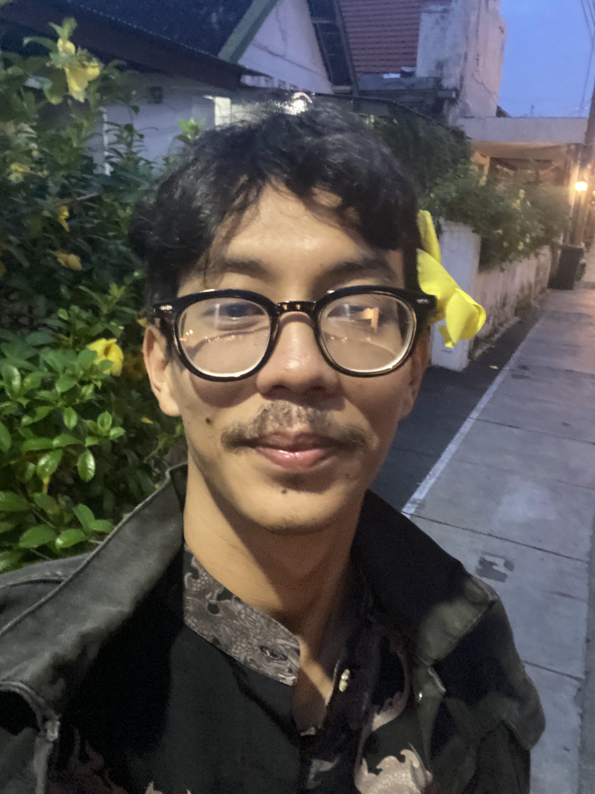
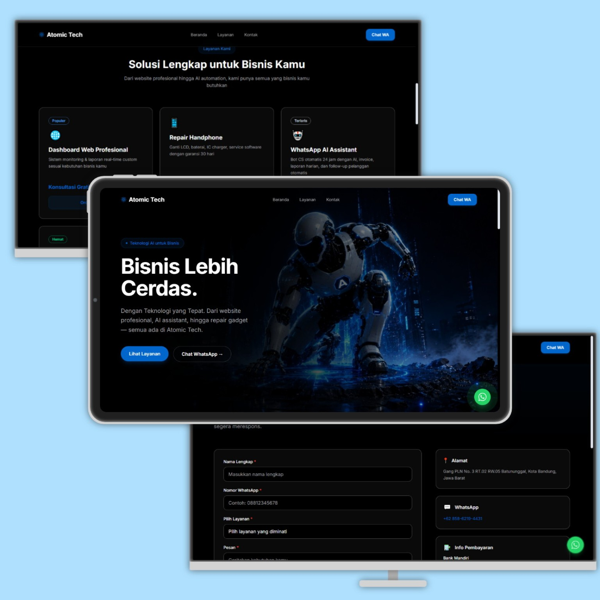
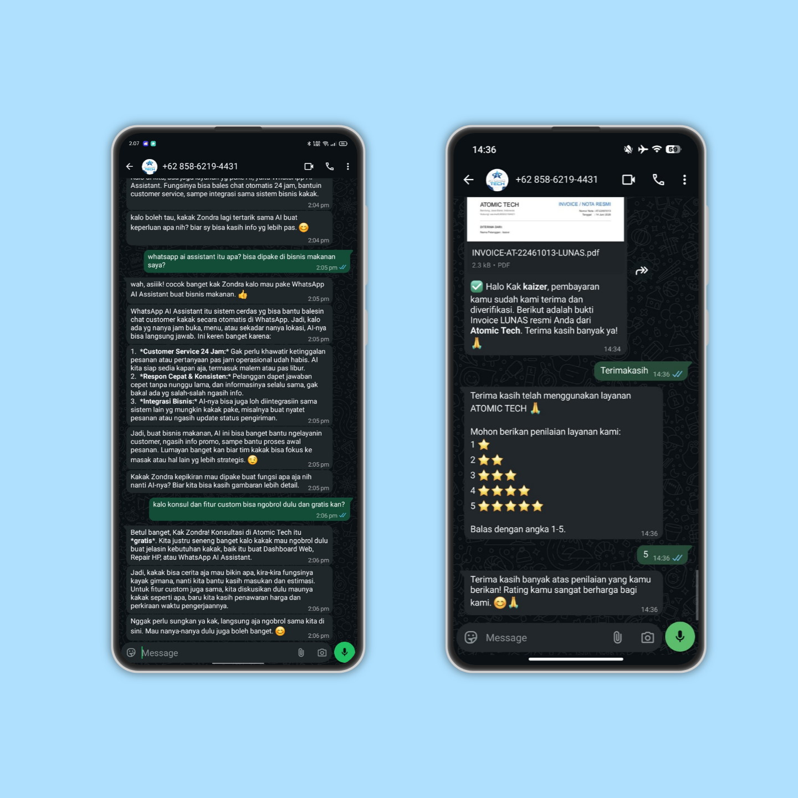

Saya membangun solusi digital terintegrasi — mulai dari sistem ujian CBT tingkat lanjut, hingga integrasi WhatsApp AI Assistant untuk mengotomatisasi bisnis.

Sebagai lulusan SMK yang berdedikasi di bidang teknologi, saya telah merancang dan memelihara berbagai sistem secara mandiri. Fokus saya adalah menciptakan UI/UX yang modern (*glassmorphism*) serta mengintegrasikan kecerdasan buatan untuk efisiensi operasional.
Berikut adalah beberapa solusi digital dan web yang telah saya kembangkan.


Menyelami lebih dalam arsitektur dan fitur dari platform ujian digital yang saya bangun dari nol.